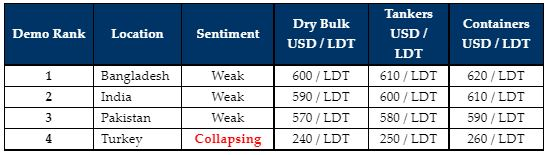

inWeekly Demolition Reports27/06/2022

All of the major global recycling markets remain in turmoil for yet another week, with very few offers forthcoming (matching the near invisible number of units currently available for recycling), in addition to an utter lack of confidence from Recyclers across all locations that any sort of recovery is quite clearly not in the ropes anytime soon.
There is the ongoing excruciating reminder that there are virtually no candidates to work on, as most Ship Owners are abstaining from recycling vessels from their aging fleets that have surprisingly found profitable chartering businesses across their respective sectors.
For those Owners with absolutely no other option on their near recycling-age units, other than a costly drydock & BWTS installations to consider, it would be a rude and jarring awakening to the fact that the sub-continent markets have tumbled well below USD 600/LDT, and as such, offers beginning with USD 5XXs/LDT should now be considered the new norm.
This is an astonishing fall from the exceptional numbers seen recently that were well in-excess of USD 700/LDT and that too only a few short months ago – certainly a well-timed achievement for the (lucky) few Ship Owners who managed to conclude their units at these remarkable levels.
On the West end, Turkey seems to be the hardest hit with steel plate prices (import and local steel) continuing their nosedive into the abyss, with vessel prices being the hardest hit.
Notwithstanding, as vessels of 20 (and even 25) years of age continue to trade and make money, there seems even less of a need for experienced Cash Buyers to panic, as there is certainly the opportunity to do a quick run (or two) on these aging units, just to ensure they break even on the deal.
As such, it certainly seems destined to be a noticeably muted summer / monsoon season ahead, with all markets deprived of tonnage, a monsoon season that is already hammering Chattogram, and collapsing fundamentals contributing to the near comical state of affairs, especially as this new reality on lower prices starts to bite.
For week 25 of 2022, GMS demo rankings / pricing for the week are as below.

📄 Download PDF: June-24-2022.pdfSource: GMS,Inc. ,https://www.gmsinc.net/gms_new/index.php/web